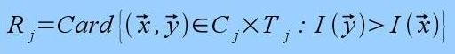
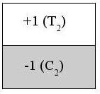
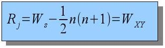

Ranklets and the
Wilcoxon rank-sum test
The
efficient computation of
ranklets
is based on their relation to the
Wilcoxon rank-sum
test (also known as the
Mann-Whitney U-test).
We recall that the value of a ranklet
Rj is
defined as the
number of pairs
(x,y) in
Cx
T such that
y>x, that is

where the
T and
C sets are arranged as in

If we now identify the
T and
C sets with
the sets of
"Treatment"
and
"Control"
observations of the
Wilcoxon test,
it is easy to see that

where
n is the number of pixels
in the
T set (a constant for a given scale level).
The
Wilcoxon statistics Ws is
defined as the sum of the ranks of all the observations (pixels) in the
"Treatment" set.
Wxy is known as
the
Mann-Whitney statistics, and is equivalent to
Ws.
Therefore, in order to compute a ranklet
Rj, there is
no need to construct the (n x n) pairs in
CxT explicitly.
It is enough to
- sort all the pixels in CUT
in order of increasing intensity
- sum the ranks of the pixels in the T
set
- subtract the constant 1/2 n (n+1)
In conclusion, choosing a suitable sorting algorithm, ranklets
can be computed with complexity as low as
O(N1/2+k).
Details are reported in this
paper.